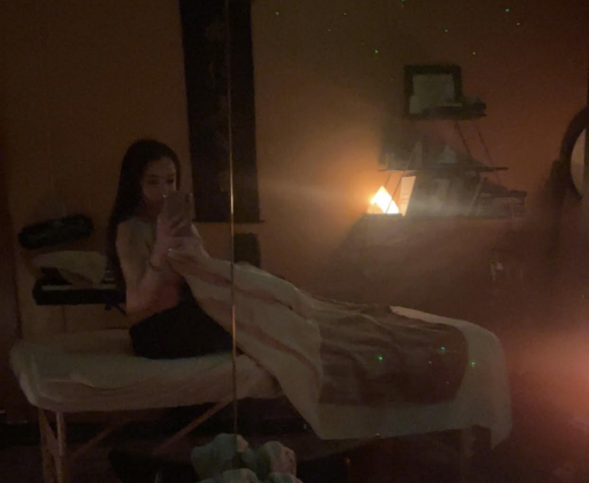

body {
color:
background-color: black ;
align-items: center;
text-align: center;
}
</head>
<body>
<h1> Every Witch needs a healing hand </h1>
<p> My soul feels home at Spirit and Soma Healing Arts with Kylie Jo Winkles </p>

<p> I had the pleasure of meeting Kylie when she came into Tribal Trends, the metaphysical shop that I work at. I figured out she is a sound healer when she purchased a singing bowl and showed me how it worked. Kylie is a professional massage therapist, sound healer, and reiki master in Hendersonville NC. She’s our neighbor on Main Street, just two doors down from us! When we first met we talked like we knew each other.
<p> I had my first professional massage from Kylie on February 23rd. I told her I was struggling with lots of pain in my body and needed inner clearings for my next life chapter. I was born with CMT and my life revolves around pain management. I have pain in my joints, muscles, nerves, mostly in my hips, legs, and shoulders.
<p> Kylie used a mix of sound healing, reiki, and and hands on massage. When we started the sound healing she played the singing bowls so beautifully - it is so special to hear them played by a professional. She is also a singer and used her beautiful voice as a sound healing modality. I have never experienced my own personal concert. She sounded like an earth angel - very angelic and moving chants. I started to cry as she used her sound healing skills.
I was massaged with a heavenly tangerine CBD oil that I keep getting sniffs of as I type this the next day. When she slowly moved her thumb up a line in my neck, I felt so much relief that I did not know I even needed. One of our healing points was my inner voice. Hands on healing as well as sound and aromatherapy works holistically to address all the elements of an issue. I saw my world shift as she was working on my neck.
<p> The after effects were incredible relief, relaxation, and rejuvenation. My boyfriend said he’s never seen me so relaxed. I had the best sleep of my life! When I woke up, I felt so incredibly filled with love and joy for life.
Holistic healing addresses so many underlying issues.
<p> I highly recommend Kylie! Her healing space felt like home, she felt like a best friend, and I will be back to her ASAP.